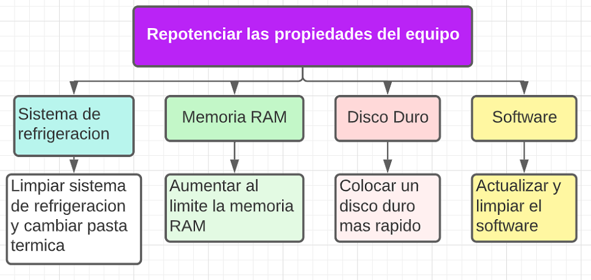
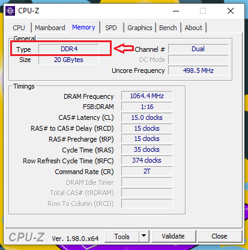
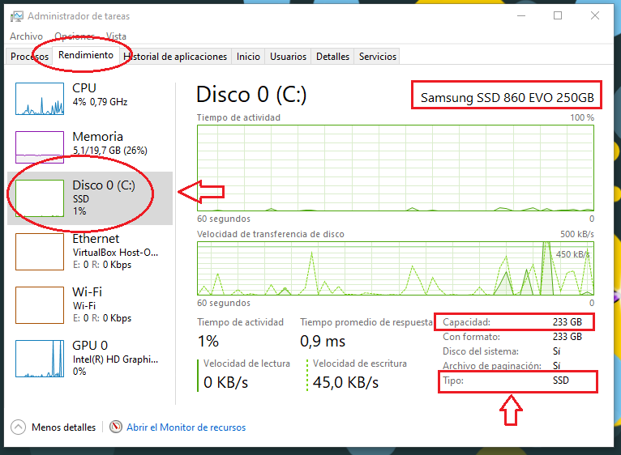

Como repotenciar
Se puede revivir una laptop vieja, renovando los componentes que afectan el rendimiento del
procesador, dentro del alcance que nos permite la tarjeta madre (Mother Board). Es decir,
según las características de la placa base, podemos colocar piezas mejores que le den más
potencia al equipo.
Ya si lo que queremos, es tener una mejor imagen, podemos incluir un monitor
externo nuevo, o si nos interesa más comodidad, un teclado y mouse adicional.
Pero en este apartado nos vamos a concentrar en cómo hacer que una laptop trabaje mejor, simplemente
renovando los componentes que influyen en su funcionamiento, teniendo en cuenta los limitantes
del procesador y que la hacen útil aun.
Para optimizar el rendimiento que nos puede entregar una laptop, debemos enfocarnos
en cuatro aspectos, que afectan el rendimiento del procesador, el primero relacionado
con el sistema de disipación de calor, debido a que temperaturas altas afectan el
funcionamiento del equipo entero.
El segundo, en actualizar el disco duro, que hace almacenamiento a largo plazo de los softwares y cuya celeridad de trasmisión
afecta la velocidad con que el procesador recibe la información.
Como tercero, en la memoria RAM, que se haya en un punto intermedio entre el disco duro y el procesador, de manera que
su capacidad y presteza influyen en lo el ritmo con que se mueve esa información.
Por último y no menos importante, en la BIOS, el sistema operativos y los softwares que
corren en la laptop.
De manera que especificaremos que tener en cuenta para renovar cada uno de estos componentes
en los apartados incluidos a continuación.

Diagnostica
Antes de hacer cualquier cosa, debemos conocer cuáles son las características de la laptop
que queremos revivir, iniciando con que procesador posee, que tipo y capacidad de RAM, además
de tipo y capacidad del disco duro.
Para reconocer parte de esto, hacemos clic derecho sobre el
icono de este equipo, a lo cual se abre las especificaciones del dispositivo, donde podemos ver
las especificaciones del procesador y la capacidad de la RAM.
En la imagen de arriba podemos ver que en procesador dice: Intel CORE i5-6200U @ 2.30GHz
2.40 GHz, donde se entiende que es un procesador CORE i5, de sexta generación (el primer número
que sigue), el cual fue lanzado en 2015, pero si escribimos dicho modelo en el buscador WEB podemos
tener mas informacion de sus especificaciones.
Además podemos ver que tiene 20 GB de memoria RAM pero aún no sabemos cuanta es la capacidad máxima
de RAM que soporta y que tipo debe utilizar.
Para identificar que tanta le podemos colocar, debemos abrir la consola de Windows, escribiendo:
símbolo de sistema, en la barra de búsqueda (al lado derecho, del símbolo de Windows,
en la parte inferior izquierda de la pantalla).
Luego en la línea de comando escribimos:
wmic memphysical get MaxCapacity, MemoryDevices
A lo cual obtenemos debajo de la palabra MaxCapacity un número que esta en kilobites, por lo cual dividimos
entre 1048576, para obtener el valor en GB, que según podemos ver en la imagen inferior al hacer la operación obtenemos que es equivalente a 32GB.
Es decir a esa laptop le puedo colocar como máximo 32 GB de memoria RAM, si pusiera más no la utilizaría y estaría desperdiciando dicho recurso que es costoso.
Las antiguas versiones de Windows permitían ver el tipo de memoria RAM en el administrador de tares, pero ahora para poder ver eso, debemos instalar un software gratuito, llamado CPU-Z (descargar de la página oficial).

Cuando se ejecuta dicho software, en la pestaña de memoria(Memory), podemos apreciar, el tipo (type)
que en la imagen indica es DDR4 (de laptop), la capacidad actualmente instalada (Size),
que en el caso es 20 GB y el canal muestra tener espacio para dos Memorias RAM.
Teniendo presente que las memorias RAM de laptop son diferentes a las de computadores de escritorio, por el tamaño y forma,
además de ser mas costosas.
Por otra parte para determinar la capacidad y tipo de disco duro, se abre la ventana de Administrador de tareas
(Ctrl + Alt + Supr) y en la pestaña de rendimiento / Disco; podemos apreciar la
capacidad del disco instalado y el tipo.

Con la información obtenida (hasta aqui) podemos definir que el laptop del ejemplo tiene procesador
CORE i5, de sexta generación, con capacidad de memoria RAM de 32GB, de los cuales tiene
instalada 20, en dos memorias, una de 4GB y otra de 16GB.
Podría cambiarle la memoria de 4GB por otra de 16 GB y el equipo la utilizaría,
pero con la capacidad actual es suficiente para el uso que hago del equipo.
Además la laptop del ejemplo incluye un disco duro de estado sólido SSD de 250 GB,
que tiene 233 GB utilizables, lo cual indica que presenta veloidad aceptable de
movimiento de la información aunque la capacidad se podría mejorar.
Antes de abrir
La siguiente validacion es para un EditText, y verfica, primero que las casillas no esten vacias, no sean iguales y tengan una cantidad limite de caracteres, se plantea como dos metodos, en donde el primero evalua la condicion y el siguiente establece los mensaje de negacion y el acceso a la funcionalidad del boton.


public String validar(){
String validacion ="bien";
String campo1 = et_nombreProyecto.getText().toString();
String campo2 = et_IdTransecto.getText().toString();
if(campo1.isEmpty() || campo2.isEmpty()){
validacion = "vacio";
}else if (campo1.equals(campo2)){
validacion = "iguales";
} else if (campo1.length() > 10 || campo2.length() > 10){
validacion = "largo";
}
return validacion;
}
public void onClickIniciar(View view) {
switch (validar()){
case "vacio":
Toast.makeText(this, "No pueden estar vacios", Toast.LENGTH_LONG).show();
break;
case "iguales":
Toast.makeText(this, "No pueden ser iguales", Toast.LENGTH_LONG).show();
et_IdTransecto.setText("");
break;
case "largo":
Toast.makeText(this, "no pueden ser tan grandes", Toast.LENGTH_LONG).show();
et_nombreProyecto.setText("");
et_IdTransecto.setText("");
break;
default: iniciarProyecto();
}
}
Dialogo Alerta
La clase AlertDialog.Builder permite generar una ventana de abvertencia para enviar un mensaje
o colocarle botones adentro, para este caso se va a colocar dentro de un metodo para integrar las funciones
que se le van a colocar.
el metodo tiene como parametros el String, que va dentro de setTitle() y el String que dentro
de setMessage(), de manera que cuando se llame el metodo, la ventana se personaliza con esa enviarInformacion.
showMessage("Nuevo proyecto creado: ", et_nombreProyecto.getText().toString());
-----------------
public void showMessage(String title, String message){
AlertDialog.Builder builder = new AlertDialog.Builder(this);
builder.setCancelable(true);
builder.setTitle(title);
builder.setMessage(message);
builder.show();
}